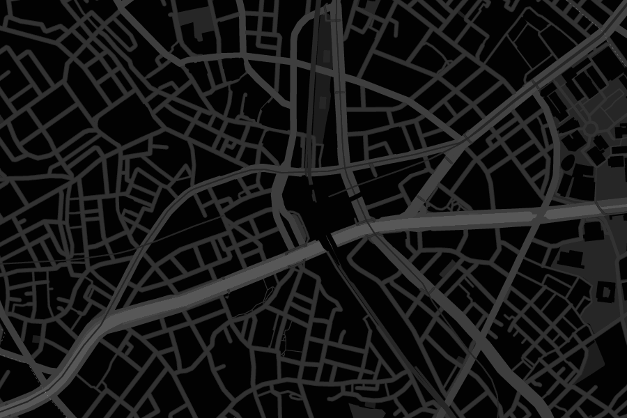

About Shibuya Media
世界から注目を集める都市メディア ｢Shibuya Media｣。
渋谷は毎週221万人が来訪し、10代～20代の若者が多く集う世界が注目する都市媒体です。
View Detail

世界から注目を集める都市メディア ｢Shibuya Media｣。
渋谷は毎週221万人が来訪し、10代～20代の若者が多く集う世界が注目する都市媒体です。
View Detail